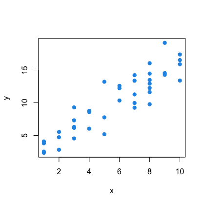
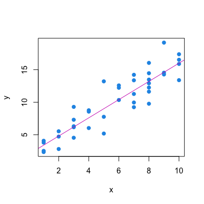
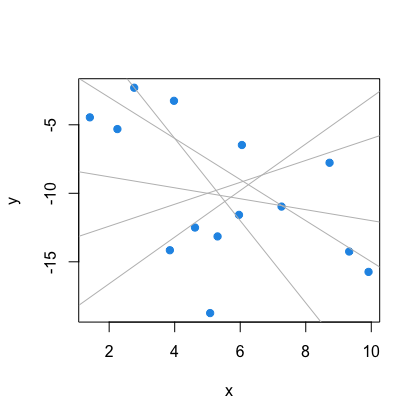
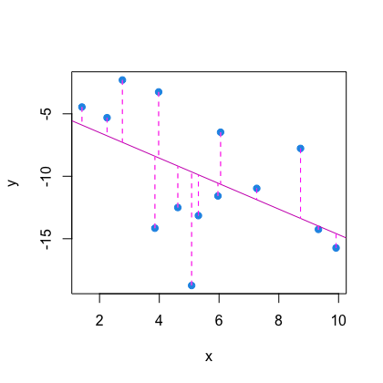
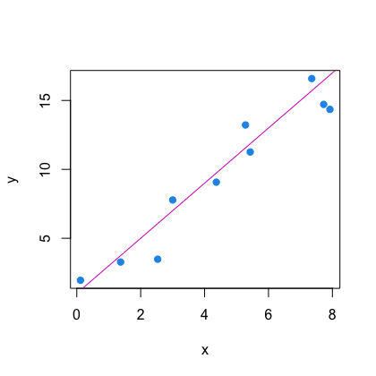
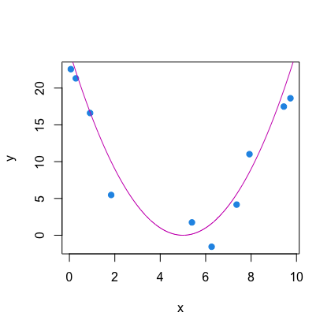
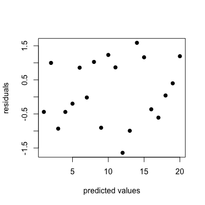
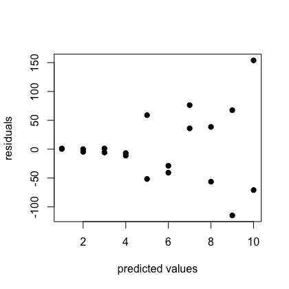

When to use OLS, the assumptions of OLS, how to implement OLS regression, and how to interpret results from OLS regression.
Keywords
List relevant keywords that describe the content of the research guide. Examples include research methods, statistical software, data analysis, etc.
Introduction
Regression is statistical model for estimating the relationship between two or more variables. Ordinary least squares (OLS) regression is one method for estimating a linear regression model. In this guide, we’ll discuss when to use OLS, the assumptions of OLS, how to implement OLS regression, and how to interpret results from OLS regression.
Methods
Linear Regression
Linear regression allows us to estimate the relationship between one dependent variable, Y, (also known as the outcome or response variable) and one or more independent variables, X, (also known as predictors, response variables, or explanatory variables). In the simplest case, we can consider one dependent variable and one independent variable. The goal of regression is find the line of the form \(Y = \beta_0 + X\beta_1\) , where \(\beta_0\) and \(\beta_1\) are our regression coefficients, that best fits the data.


Ordinary Least Square
How do we know what line best fits the data? Different methods differ in how they choose the “best” line for the data.


In OLS, this is done by minimizing the sum of squared residuals (SSR). A residual is the difference between the observed dependent variable, \(Y\), and the fitted or predicted values of the dependent variable, \(\hat{Y}\) . We obtain fitted values using the regression equation \(\hat{Y} = \hat{\beta}_0 + X\hat{\beta}_1\), where \(\hat{\beta}_0\) and \(\hat{\beta}_1\) are the estimated regression coefficients. So, in OLS, we want to find the values of \(\beta\) that minimize:
\[
\sum_{i=1}^n y_i - \beta_0 - X_i\beta_1
\]
While most researchers use statistical software to estimate regression coeffients, we can also calculate the coefficients manually. First we define X as the design matrix. In the case of one independent variable, our design matrix has two columns. The first is a column of 1’s to represent the intercept and the second is our X values.
For your model to give valid and meaningful results, certain assumptions are necessary. If any of these are violated, your results may not be valid.
1. Linearity
Linearity is the assumption that the relationship between the dependent and independent variable is linear.
Checks: We can check this assumption by creating a scatter plot of independent vs dependent variable. If we see a nonlinear relationship, the assumption is violated.

Linearity assumption holds

Linearity assumption does not hold
Fixes: The two main ways to address a violation of linearity are:
Transform the data - You can apply a function to your variable, such as a log or exponential, to transform the data.
Fit a nonlinear model - You can use an alternative regression model, such as a GLM, to model your data.
2. Homoscedasticity of errors
Homoscedasticity means that a variable has a constant variance, so the first part of this assumption states that the error terms all have equal variance. This assumption could be violated when the variance of the dependent changes across values of a predictor. For example, if we look at income vs expenditures, we might expect to find greater variablity in how much money individuals with higher incomes spend vs individuals with lower incomes.
Check: We can check this assumption by plotting the model residuals vs the predicted values. The points should look randomly scattered. If we see a pattern in the distribution of the residuals, the assumption is violated.

Homoscedasticity holds

Homoscedasticity does not hold
We can also check for homoscedasticity using a test such as the Breush-Pagan test or the White test.
Fixes: We can address homoscedasticity in a number of ways:
Transform the data - Applying a transformation, such as a log or square root, may get rid of heteroscedasticity.
Weighted least squares - Weighted least squares regression can account for heteroscedasticity by minimizing a weighted sum of squared residuals.
Robust standard errors - Using robust (Huber-White) standard errors provides reliable estimates of the coefficient standard errors under heteroscedasticity.
3. No autocorrelation of errors
No autocorrelations of errors means that errors of different observations are not correlated. This assumption is often violated in the case of time series data, where observations close in time may be highly correlated.
Check: We can check this assumption by plotting the residuals against any possible ordering variable, such as time. The points should look randomly scattered. If we see a pattern in the distribution of the residuals, the assumption is violated.
No autocorrelation holds
No autocorrelation does not hold
We can also check for autocorrelation using a test such as the Durban-Watson test or the Breusch-Godfrey test.
Fix: If your errors have autocorrelation, consider using an autoregressive model instead.
4. Linear independence of X
This assumption applies when there is more than one independent variable. When independent variables have an exact linear relationship with each other, this is called perfect multicollinearity, and makes it impossible to estimate the regression coefficients.
Check: We can check this assumption by calculating a correlation matrix of all pairwise correlations between independent variables. A value of 1 or -1 indicates perfect multicollinearity, while a value close to 1 indicates high multicollinearity.
We can also calculate the Variance Inflation Factor to determine how much the variance of a regression coefficient is increased due to multicollinearity. A high VIF, such as VIF >5, indicates high multicollinearity.
Fix: To fix multicollinearity, you can remove on of the collinear variables from the model.
Implementation
First, we will look at an example dataset with college student GPAs. We are interested in the relationship between skipped lectures and GPA. Using R, we can fit a model of the form:
Error in contrib.url(repos, "source"): trying to use CRAN without setting a mirror
gpa <-rddata('gpa1')
Error in rddata("gpa1"): could not find function "rddata"
## Check for linearityplot(gpa$skipped, gpa$colGPA)
Error: object 'gpa' not found
## Fit the modelm1 <-lm(colGPA ~ skipped, data=gpa)
Error in eval(mf, parent.frame()): object 'gpa' not found
plot(fitted(m1), resid(m1))
Error: object 'm1' not found
plot(colGPA, resid(m1))
Error: object 'colGPA' not found
summary(m1)
Error: object 'm1' not found
# Python code hereprint("Hello Python")
Hello Python
display"Hello Stata"
Hello Stata
Interpretation
The coefficients of the model tell us how much the expected change in our dependent variable is, per one unit increase in our independent variable. In this case, each skipped lecture is associated with an expected -0.09 point decrease in GPA.
Multiple Linear Regression
We can explain more variation by adding more independent variables that we know are associated with the dependent variable. For college GPA, we might want to add high school GPA, whether some works a job >20 hours a week, and whether someone has a computer. Our new model looks like:
## Fit the model with covariatesm2 <-lm(colGPA ~ hsGPA + PC + skipped, data=gpa)
Error in eval(mf, parent.frame()): object 'gpa' not found
summary(m2)
Error: object 'm2' not found
# Python code hereprint("Hello Python")
Hello Python
display"Hello Stata"
Hello Stata
Now, coefficients are interpreted as the expected change in the dependent variable per one unit increase in our independent variable when holding all other variables constant.
Goodness of Fit
Calling the summary function gives us more information about our model. The R-squared is a measure of model fit. It tells us the percent of variance in the dependent variable that is explained by the model. In our first model, about 7% of variation in GPA is explained by number of skipped lectures. Our second model explains about 25% of the variation in GPA.
The R-squared will always increase when adding variables to a model. If want to avoid overfitting or adding unnecessary variables, we can instead look at a penalized measure of model fit. The Adjusted R-squared is one example of this. Between the first and second model, this value increases, suggesting that the variables we added are good predictors. But what if we add an irrelevant predictor, such as whether someone has siblings?
Error in eval(mf, parent.frame()): object 'gpa' not found
summary(m3)
Error: object 'm3' not found
# Python code hereprint("Hello Python")
Hello Python
display"Hello Stata"
Hello Stata
We can see that now the Adjusted R-squared decreases. Other penalized measures of fit include AIC and BIC. These are a good way of comparing models to determine which combination of independent variables best predicts the dependent variable. While for R-squared, a higher value indicates a better model, for AIC and BIC, a lower value is better.
FAQs.
How do I decide which variables to include in my regression?
The best way to decide which variables to include in your regression is using domain knowledge. However, sometimes there are too many possible relevant variables to select the best model manually. In this case, there are a number of options for variable selection:
Best subset selection - Estimate all possible models with all combinations of independent variables and choose the best model based on a criteria such as AIC.
Stepwise selection - Either start with the full model and remove the least significant indepentdent variable , or start with a univariate model and add the most signficant independent variable.
Regularization using Lasso regression - Estimate coefficients while penalizing complexity so that some coefficients shrink to zero and the independent variables are removed from the model.
How do I include confounders in my model?
Confounders should be included in the model as covariates to control for their effect.
How do I include an effect modifier in my model?
Effect modifiers should be included in the model as interaction terms.
References
Appendix
Include any additional material or supplementary information here.